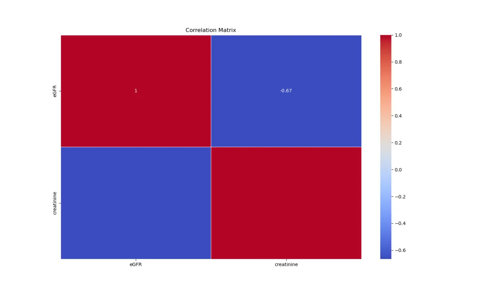
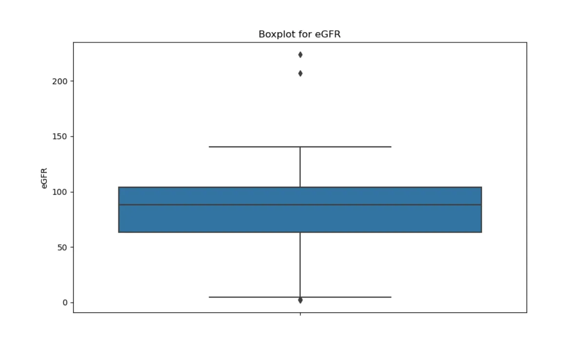
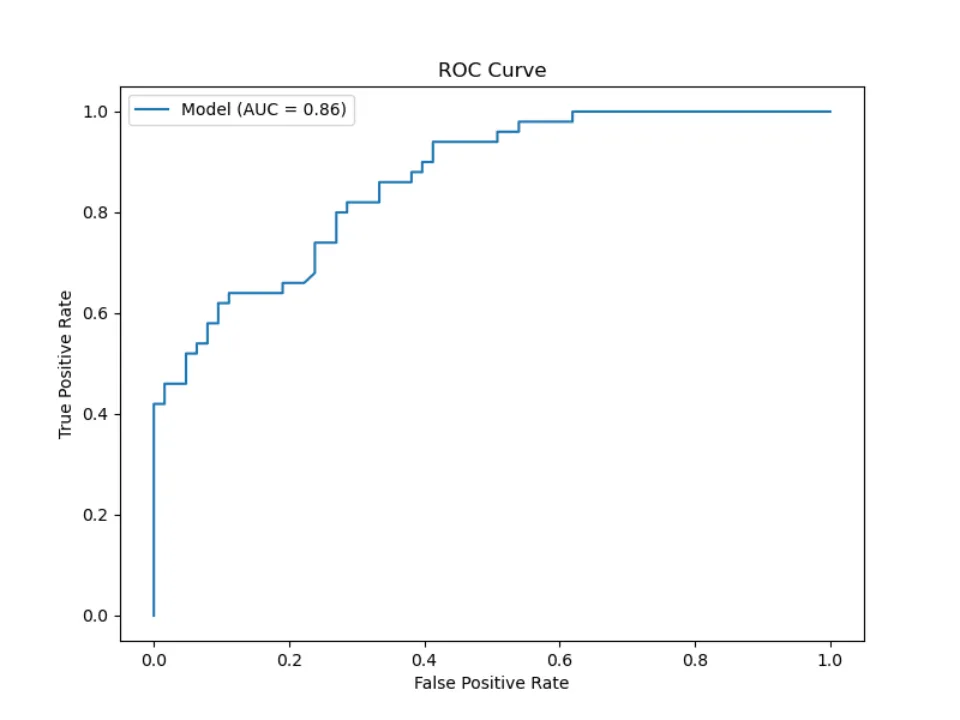
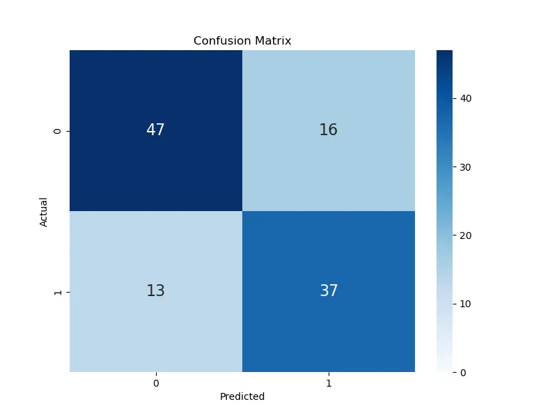
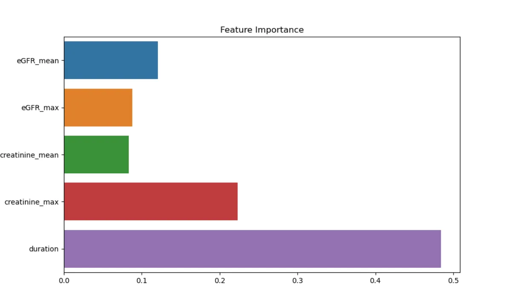
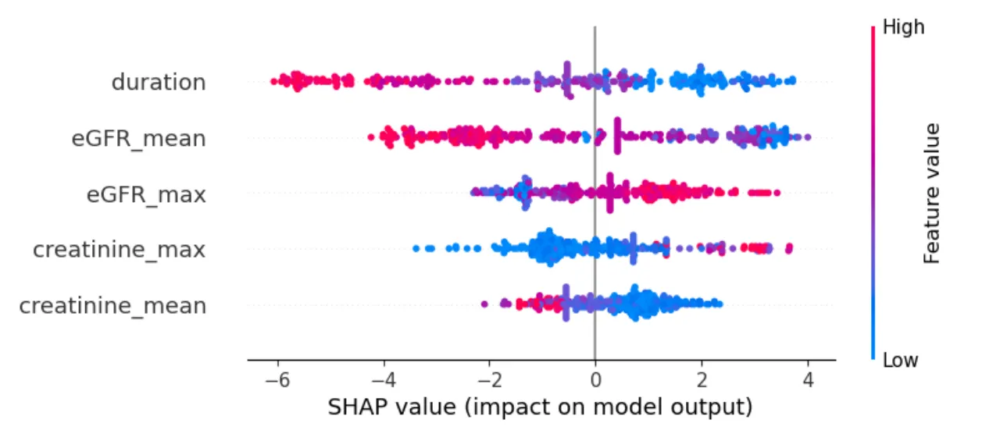

User Guide¶
This user guide explains how to use the Medical Time-Series Data Analysis Toolkit, a powerful tool designed to assist healthcare professionals in analyzing and interpreting time-series medical data. The toolkit is specifically tailored for extracting meaningful features from patient records over time, enabling doctors to gain insights into the progression of diseases, the effectiveness of treatments, and other critical clinical outcomes.
Prerequisites¶
Before you begin, ensure you have the following installed:
Python 3.7 or higher
pandas
numpy
scikit-learn
matplotlib
seaborn (optional for advanced visualizations)
xgboost (for using the XGBoost model)
lifelines (for survival analysis models like Cox Proportional Hazards)
imbalanced-learn (for data balancing techniques like SMOTE)
You can install the necessary libraries using pip:
pip install pandas numpy scikit-learn matplotlib seaborn xgboost lifelines imbalanced-learn
Input Data Format¶
To use the FeModEvaluator class effectively, your input data should adhere to the following format. Below is a guide based on a provided sample dataset.
Sample Data Format¶
The dataset should be structured as a pandas DataFrame with the following columns:
**Patient_ID**: A unique identifier for each patient (e.g.,PATIENT_IDin the example).**Record_Time**: The date and time of the record (e.g.,RE_DATEin the example) in a format that can be parsed bypandas.to_datetime(e.g.,YYYY-MM-DD HH:MM:SS).**Outcome**: The outcome variable, indicating the result of the treatment or condition.**Clinical Measurements**: Clinical data, such as lab values or measurements (e.g.,eGFR,creatininein the example).
Example Rows（covid_19 dataset）¶
| PATIENT_ID | RE_DATE | outcome | eGFR | creatinine | … (other measurements) |
| — | — | — | — | — | — |
| 1 | 2020-01-31 01:09:00 | 0 | NaN | NaN | … |
| 1 | 2020-01-31 01:25:00 | 0 | NaN | 136.0 | … |
| 1 | 2020-01-31 01:44:00 | 0 | 46.6 | 130.0 | … |
| … | … | … | … | … | … |
Usage¶
Class Initialization¶
To utilize this data structure with the FeModEvaluator class, you need to initialize the class as follows:
import pandas as pd
import mtslearn.feature_extraction as fe
# Load your data into a DataFrame
file_path = 'path/to/your/375_patients_example.xlsx' # Replace with your file path
df = pd.read_excel(file_path)
# Class Initialization
fe = fe.FeModEvaluator(
df,
group_col='PATIENT_ID',
time_col='RE_DATE',
outcome_col='outcome',
value_cols=['eGFR', 'creatinine'],
selected_features=['mean', 'max'],
include_duration=True
)
Parameters:
**df**: The DataFrame containing your patient data.**group_col**: Column name to group the data by (e.g., patient ID).**time_col**: Column name representing the time of each record. This column should be in a format that can be parsed bypandas.to_datetime.Common formats include:
YYYY-MM-DDYYYY-MM-DD HH:MM:SSMM/DD/YYYYMM/DD/YYYY HH:MM:SS
**outcome_col**: Column name representing the outcome variable.**value_cols**: List of columns to extract features from.**selected_features**: List of selected features for model training (optional). If not provided, it defaults to the same columns asvalue_cols.**include_duration**: Boolean indicating whether to include the duration feature (calculated as the difference in days between the first and last timestamps for each group).
Feature Extraction Methods¶
1. Extracting Basic Features¶
The extract_basic_features method extracts statistical features from a series of values:
features = fe.extract_basic_features(values, fill_method='mean', fill=True)
Parameters:
**values**: The series of values from which to extract features.**fill_method**: Method to fill missing values ('mean','median', or'zero').**fill**: Whether to fill missing values.
Features Extracted:
Mean
Median
Standard deviation
Minimum
Maximum
Difference between the last and first measurements (
diff_last_first)Count of missing values (
missing_count)Ratio of missing values (
missing_ratio)
2. Extracting Features from DataFrame¶
The extract_features_from_dataframe method extracts features for each group in the DataFrame:
features_df = fe.extract_features_from_dataframe(fill=True, fill_method='mean')
Parameters:
**fill_method**: Method to fill missing values.**fill**: Whether to fill missing values.
Returns: A DataFrame where each row represents a group (e.g., a patient) with extracted features.
Preparing Data for Modeling¶
The prepare_data method prepares the data for modeling by extracting features, handling missing values, balancing the dataset, and splitting it into training and testing sets:
X_train, X_test, y_train, y_test = fe.prepare_data(
fill=True,
fill_method='mean',
test_size=0.2,
balance_data=True,
cross_val=False
)
Parameters:
**fill_method**: Method to fill missing values.**fill**: Whether to fill missing values.**test_size**: Proportion of the data to be used as the test set.**balance_data**: Whether to balance the data using SMOTE.**cross_val**: Whether to prepare data for cross-validation.
Returns:
**X_train, X_test**: Feature sets for training and testing.**y_train, y_test**: Outcome sets for training and testing.
Evaluating Models¶
1. Evaluating Classification Models¶
The evaluate_model method evaluates classification models and plots ROC curves and confusion matrices:
fe.evaluate_model(model, X_test, y_test, y_prob)
Parameters:
**model**: Trained model.**X_test**: Test set features.**y_test**: True labels for the test set.**y_prob**: Predicted probabilities for the positive class.
Outputs:
Accuracy
Precision
Recall
F1 Score
AUC (if applicable)
2. Evaluating Regression Models¶
The evaluate_lasso_model method evaluates regression models:
fe.evaluate_lasso_model(model, X_test, y_test, y_pred)
Parameters:
**model**: Trained model.**X_test**: Test set features.**y_test**: True labels for the test set.**y_pred**: Predicted values.
Outputs:
Mean Squared Error
R² Score
Running the Pipeline¶
The run method combines all the steps into a single pipeline for ease of use:
fe.run(
model_type='logit',
fill=True,
fill_method='mean',
test_size=0.2,
balance_data=True,
cross_val=False,
n_splits=5
)
Parameters:
**model_type**: Type of model to use ('logit','cox','xgboost', or'lasso').**fill_method**: Method to fill missing values.**fill**: Whether to fill missing values.**test_size**: Proportion of the data to be used as the test set.**balance_data**: Whether to balance the data using SMOTE.**cross_val**: Whether to perform cross-validation.**n_splits**: Number of splits for cross-validation (default is 5).
Example Usage¶
Here’s an example of how to use the FeModEvaluator class in practice:
import pandas as pd
import mtslearn.feature_extraction as fe
file_path = 'path/to/your/375_patients_example.xlsx' # Replace with your actual file path
df = pd.read_excel(file_path) # Read the Excel file located at file_path
# Fill missing values in the PATIENT_ID column using the forward fill method
df['PATIENT_ID'].fillna(method='ffill', inplace=True)
# Optionally print the first 50 rows of the DataFrame to check the data
# print(df.head(50))
# Ensure the data is sorted by PATIENT_ID and RE_DATE to maintain chronological order
df.sort_values(by=['PATIENT_ID', 'RE_DATE'], inplace=True)
# Initialize FeModEvaluator class for feature extraction and model evaluation
fe = fe.FeModEvaluator(
df,
group_col='PATIENT_ID',
time_col='RE_DATE',
outcome_col='outcome',
value_cols=['eGFR', 'creatinine'],
selected_features=['mean', 'max'],
include_duration=True
)
# Run the feature extraction and model evaluation using XGBoost as the model
fe.run(
model_type='xgboost',
fill=True,
fill_method='mean',
test_size=0.3,
balance_data=True,
plot_importance=True
)
# Example calls to the describe_data method to visualize the data
fe.describe_data(plot_type='boxplot', value_col='eGFR') # Generate a boxplot for the eGFR column
fe.describe_data(plot_type='correlation_matrix', feature1='eGFR', feature2='creatinine') # Generate a correlation matrix between eGFR and creatinine
Presentation of Results (Partial)¶
Characterization of data
 
Evaluation of predictive effects
 
Calculation of feature importance
 
Conclusion¶
The FeModEvaluator class provides a comprehensive framework for feature extraction, data preparation, and model evaluation tailored to time-series medical data. The class simplifies the workflow, making it easier to extract meaningful insights from complex datasets and evaluate predictive models effectively.
Tips for Best Practices:¶
Data Preprocessing: Ensure that your data is clean and properly formatted before feeding it into the
FeModEvaluatorclass. This includes handling missing values and ensuring that timestamps are in a consistent format.Feature Selection: While the toolkit provides default statistical features, consider selecting additional features that are relevant to your specific medical application.
Model Choice: The toolkit supports multiple model types, including logistic regression, Cox proportional hazards, XGBoost, and Lasso regression. Choose the model that best suits your prediction problem.
Cross-Validation: Utilize cross-validation, especially when working with small datasets, to ensure that your model generalizes well to unseen data.
Visualizations: Use the built-in visualization methods to explore and understand the relationships between clinical features in your dataset.
By following this guide, you can effectively use the Medical Time-Series Data Analysis Toolkit to analyze patient data, extract critical features, and evaluate predictive models, leading to more informed clinical decisions and research insights.